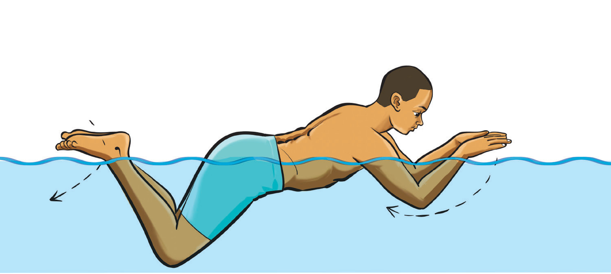

Butterfly stroke
Butterfly stroke is a swimming style where both arms move symmetrically and simultaneously in a windmill motion while both legs kick together in a fluid wave-like motion. In this movement, the swimmer’s body undulates to help propel forward while breathing occurs during the arm recovery as the head lifts. It is one of the most powerful and physically demanding swimming strokes, requiring a high level of strength, endurance and coordination. It is recognized for its unique wave-like motion and simultaneous arm movements, making it the second-fastest stroke after the front crawl. The following steps will help you practice the butterfly stroke:
- (i)Dive or push from the wall with face down, body in wave-like motion;
- (ii)Move your arms together in a sweeping motion over the water before pulling downwards for propulsion. Start the strokes with both arms extended forward, then push outward and downward through the water before recovering back over the surface in a smooth, circular motion. The arms generate most of the forward movement in the butterfly;
- (iii)Perform a dolphin kick, moving both feet together in a wave-like motion. This kick originates from the hips, with the legs and feet following in a fluid, undulating movement. The dolphin kick provides continuous propulsion and helps maintain body position; and
- (iv)Breath as you lift the head forward during the arm recovery phase. Inhale quickly before the face returns to the water and then exhale while submerged.